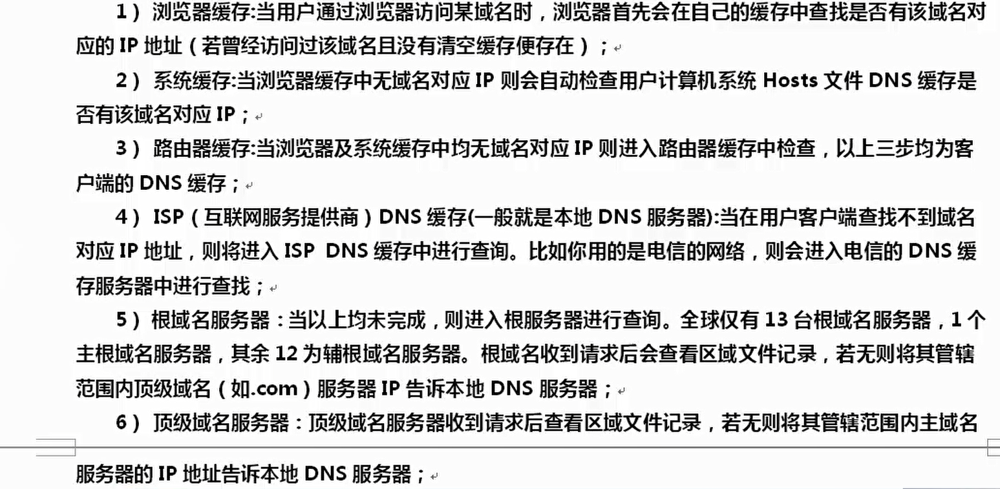

- 通过字典拼接到子域名上去访问DNS服务器，如果DNS返回IP说明该子域名存在
历史记录查询
域名记录
A记录（Address）正向解析
- A记录是将一个主机名（全称FQDN）和一个IP地址关联起来，大多数客户端程序默认的查询类型
- 例如：就是域名解析IP（mpy.com -> 12.12.12.11）
PTR记录（Pointer） 反向解析
- PTR记录将一个IP地址对应到主机名（全称域名FQDN），这些记录保存在in-addr.arpa域中
- 例如：IP解析域名（12.12.12.11 -> mpy.com）
CNAME记录（Canonical Name）别名记录
- 别名记录，也成规范名字（Canonical Name），这种记录允许您将多台映射到同一台计算机上
- 例如：n.mpy.com -> 8.8.8.7，m.mpy.com -> 8.8.8.7
MX记录（Mail eXchange）邮件记录
- MX记录是邮件记录，它指向一个邮件服务器，用于电子邮件系统发邮件时根据收信人的地址后缀来定位邮件服务器
- 当有多个MX记录（即有多个邮件服务器）时，则需要设置数值来确定其优先级，通过设置优先级数字来指明首选服务器，数字越小表示优先级越高
- 例如：mail.mpy.com
NS记录（Name Server）域名服务器记录
- NS（Name Server）记录是域名服务器记录，也称为授权服务器，用来指定该域名由哪个DNS服务器进行解析
- 例如：dns.mpy.com
域名解析过程


DNS域传送漏洞原理
- DNS服务器分为：主服务器、备份服务器和缓存服务器。在主备服务器之间同步数据库，需要使用“DNS域传送”。域传送是指备份服务器从主服务器拷贝数据，并用得到的数据更新自身数据库
- 若DNS服务器配置不当，可能导致攻击者获取某个域的所有记录。造成整个网络的拓扑结构泄露给潜在的攻击者，包括一些安全性较低的内部主机，如测试服务器。同时，黑客可以快速的判定出某个特定zone的所有主机，收集域信息，选择攻击目标，找出未使用的IP地址，绕过基于网络的访问控制。
DNS域传送漏洞检测
nslookup
- 基本过程
1) nslookup #进入交互式shell
2) server dns.xx.yy.zz #设定查询将要使用的DNS服务器
3) ls xx.yy.zz #列出某个域中的所有域名
4) exit #退出
- 漏洞检验-不存在漏洞
> nslookup
Server: lkwifi.cn
Address: 192.168.68.1
*** lkwifi.cn can't find nslookup: Non-existent domain
> server ss2.bjfu.edu.cn
Default Server: ss2.bjfu.edu.cn
Address: 202.204.112.67
> ls bjfu.edu.cn
[ss2.bjfu.edu.cn]
*** Can't list domain bjfu.edu.cn: Query refused
The DNS server refused to transfer the zone bjfu.edu.cn to your computer. If this
is incorrect, check the zone transfer security settings for bjfu.edu.cn on the DNS
server at IP address 202.204.112.67.
> exit
- 漏洞检验-存在漏洞
> nslookup
> server dns1.xxx.edu.cn
> ls xxx.edu.cn
nmap
- 利用nmap漏洞检测脚本"dns-zone-transfer"进行检测
nmap --script dns-zone-transfer --script-args dns-zone-transfer.domain=xxx.edu.cn -p 53 -Pn dns.xxx.edu.cn
--script dns-zone-transfer表示加载nmap漏洞检测脚本dns-zone-transfer.nse，扩展名.nse可省略
--script-args dns-zone-transfer.domain=xxx.edu.cn向脚本传递参数，设置列出某个域中的所有域名
-p 53 设置扫描53端口
-Pn 设置通过Ping发现主机是否存活
dig
- 使用说明
dig -h
- 漏洞测试
dig @dns.xxx.edu.cn axfr xxx.edu.cn
axfr是q-type类型的一种: axfr类型是Authoritative Transfer的缩写，指请求传送某个区域的全部记录。
DNS域名解析
PING
ping baidu.com
root@kali:/home/mpy# ping baidu.com
PING baidu.com (220.181.38.148) 56(84) bytes of data.
64 bytes from 220.181.38.148 (220.181.38.148): icmp_seq=1 ttl=128 time=68.5 ms
NSLOOKUP
nslookup baidu.com
root@kali:/home/mpy# nslookup baidu.com
Server: 192.168.30.2
Address: 192.168.30.2#53
Non-authoritative answer:
Name: baidu.com
Address: 39.156.69.79
Name: baidu.com
Address: 220.181.38.148
DIG
dig @服务器地址 需要查询的地址 any
any：显示所有类型的域名记录（默认只显示A记录）
root@kali:/home/mpy# dig baidu.com
root@kali:/home/mpy# dig @8.8.8.8 baidu.com
root@kali:/home/mpy# dig @8.8.8.8 baidu.com any
root@kali:/home/mpy# dig @8.8.8.8 baidu.com any +noall +answer
……
baidu.com. 7191 IN SOA dns.baidu.com. sa.baidu.com. 2012143570 300 300 2592000 7200
baidu.com. 21591 IN NS ns4.baidu.com.
……
+noall +answer会显示的很整洁
root@kali:/home/mpy# dig @8.8.8.8 baidu.com any +noall +answer
baidu.com. 7070 IN SOA dns.baidu.com. sa.baidu.com. 2012143570 300 300 2592000 7200
baidu.com. 21470 IN NS ns4.baidu.com.
baidu.com. 21470 IN NS ns7.baidu.com.
baidu.com. 21470 IN NS ns3.baidu.com.
baidu.com. 21470 IN NS dns.baidu.com.
baidu.com. 21470 IN NS ns2.baidu.com.
baidu.com. 470 IN A 39.156.69.79
baidu.com. 470 IN A 220.181.38.148
baidu.com. 7070 IN MX 20 mx50.baidu.com.
baidu.com. 7070 IN MX 10 mx.maillb.baidu.com.
baidu.com. 7070 IN MX 15 mx.n.shifen.com.
-x使用IP反查域名
root@kali:/home/mpy# dig -x 8.8.8.8
; <<>> DiG 9.16.6-Debian <<>> -x 8.8.8.8
;; global options: +cmd
;; Got answer:
;; ->>HEADER<<- opcode: QUERY, status: NOERROR, id: 22187
;; flags: qr rd ra; QUERY: 1, ANSWER: 1, AUTHORITY: 0, ADDITIONAL: 0
;; QUESTION SECTION:
;8.8.8.8.in-addr.arpa. IN PTR
;; ANSWER SECTION:
8.8.8.8.in-addr.arpa. 5 IN PTR dns.google.
DNS bind版本查询
目的通过版本信息来查找相关版本漏洞的利用方式
DIG
dig txt chaos VERSION.BIND @需要查询的域名 查询bind版本信息
root@kali:/home/mpy# dig txt chaos VERSION.BIND @nc3.dnsv4.com
dnsdict6
-4 查询ipv4地址
-D 显示自带的字典
-t 线程数 最高32，默认是8
-d 显示NS MX域名信息
-S SRV服务名称猜解
-[smlxu] 选择字典大小
-s(mall=100),-m(edium=1419)(DEFAULT)
-l(arge=2601),-x(treme=5886) or -u(ber=16724)
root@kali:/home/mpy# dnsdict6 -m baidu.com